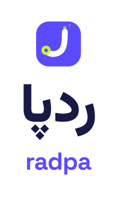
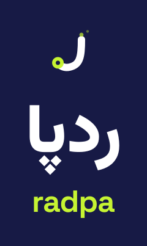
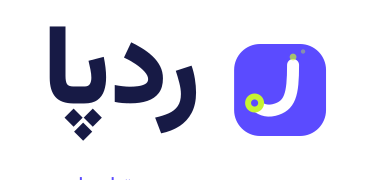
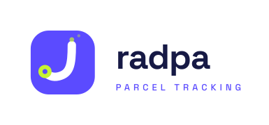
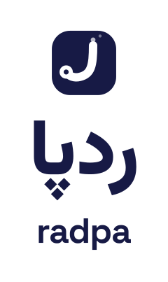
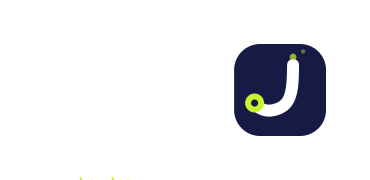
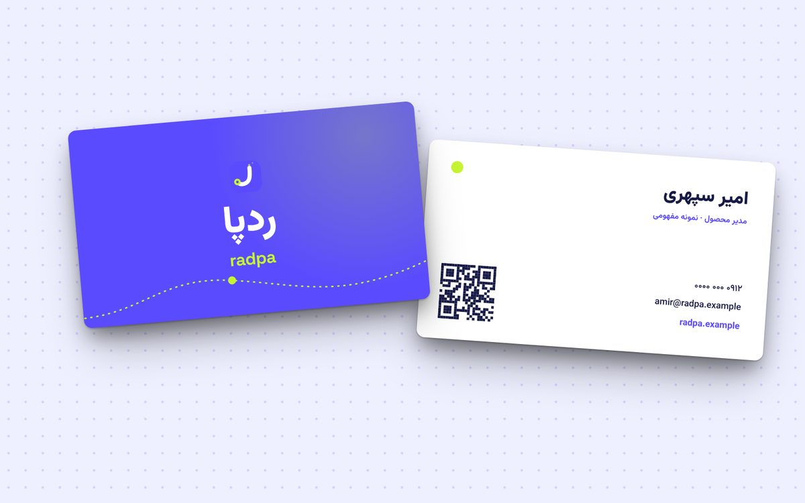
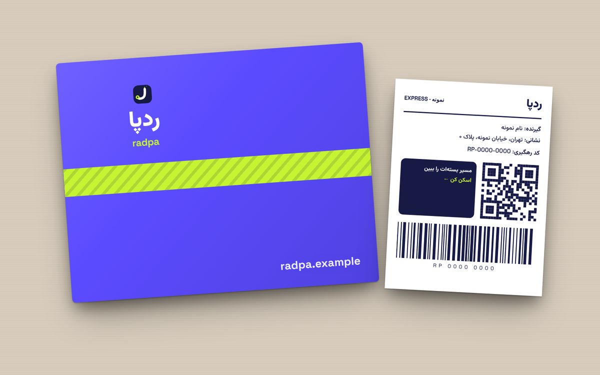
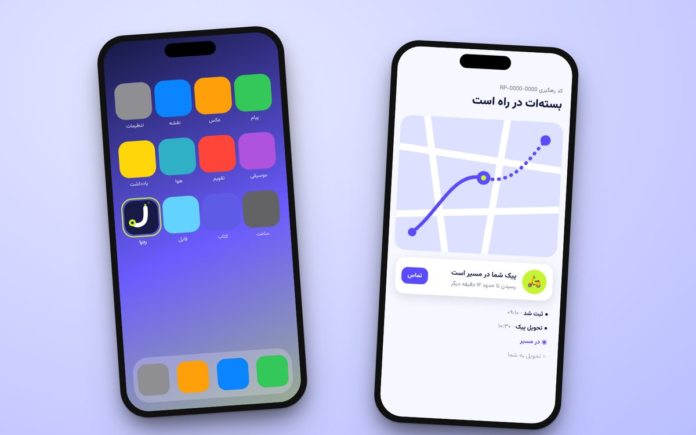
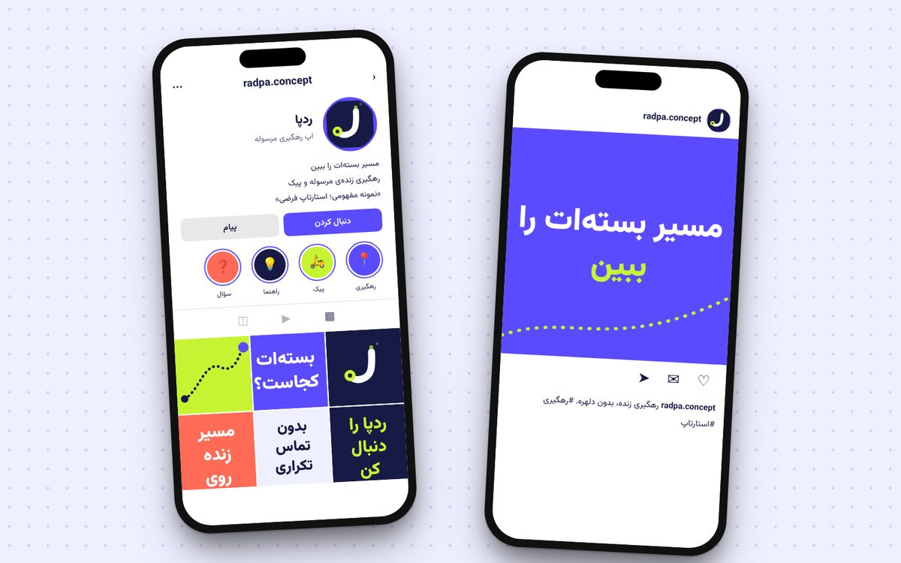

ردپا
برای اپی که میخواهد دلهرهی «بستهام کجاست؟» را بردارد؛ هویتی تمیز و فنی که روی آیکن گوشی هم همانقدر خوانا باشد که روی جعبه.

بریف و ایده
مسئله
اپهای رهگیری معمولاً پر از جدولاند و کاربر فقط یک جواب میخواهد: الان کجاست؟
ایده
حرف «ر» مثل یک مسیر است که به یک نقطهی موقعیت میرسد. دو نقطهی محو بالای آن، ردپای مسیر طیشدهاند.
نتیجه
نمادی که در اندازهی آیکن موبایل خوانا میماند، با یک رنگ لایم که فقط برای «موقعیت» استفاده میشود.
لوگو و نسخهها












فضای خالی
دور لوگو دستکم به اندازهی ارتفاع نماد فضای خالی بگذار.
کوچکترین اندازه
نماد تا ۲۴ پیکسل و لوگوی کامل تا ۸۰ پیکسل عرض خوانا میماند.
چه نکنیم
لوگو را نکش، رنگهایش را عوض نکن و روی زمینهی شلوغ نگذار.
نماد: «ر» ساختهشده با یک خط ضخیم و گوشههای گرد، با نقطهی موقعیت لایم. آیکن اپ همان نماد روی کاشی جوهری است.
پالت رنگ
روی هر رنگ بزن تا کد هگز کپی شود.
تایپوگرافی
همهی فونتها آزاد و رایگاناند (مجوز OFL). نوشتهی لوگو برای حفظ شکل، به منحنی تبدیل شده است.
کاربرد روی مصنوعات




روند کار روی پروژهی واقعی
بریف
مخاطب، رقبا و حس مورد نظر را میپرسم.
کانسپت
چند مسیر ساده با توضیح نشان میدهم؛ تو یکی را انتخاب میکنی.
اجرا
لوگو، رنگ و فونت نهایی و کاربرد روی نمونهها.
تحویل
فایل برداری SVG، PNG و راهنمای کوتاه استفاده.
برای برند خودت هم همین دقت را میخواهی؟
بگو چه کاری میکنی و چه حسی میخواهی. زمان و هزینه بعد از بررسی نیاز اعلام میشود.